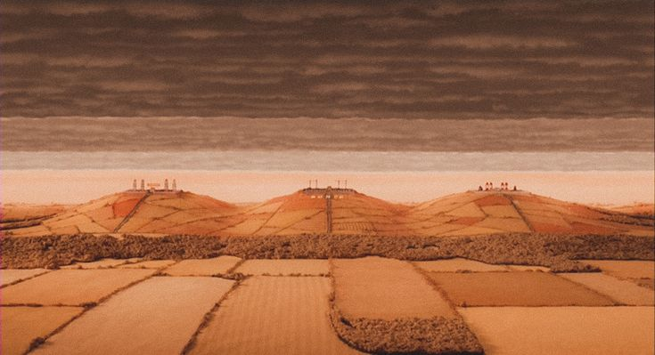

ESPACIO 02 / EL CONFLICTO
TRES GRANJEROS.
CERO PACIENCIA.
Boggis, Bunce y Bean tienen recursos, territorio y un objetivo: atrapar al zorro que amenaza su tranquilidad.
ENTRAR EN TERRITORIO ENEMIGO ↘
DENTRO DE LA HISTORIA
Las granjas representan el poder, la propiedad y el deseo de controlar el entorno. Sus dueños ven al señor Fox como una amenaza y responden con una persecución que afecta a toda la comunidad animal.
Cuando el control se vuelve obsesión, todo parece una amenaza.
Frente al bosque y sus caminos impredecibles, las granjas muestran un mundo organizado alrededor de la producción y la posesión. Este contraste refuerza el conflicto entre los animales y los seres humanos.
PISTA INTERACTIVA ✳
Observa el contraste entre los espacios abiertos del bosque
y los límites impuestos por las granjas. Pulsa las letras
para cambiar sus colores y activar el audio.
ACTIVA LAS LETRAS